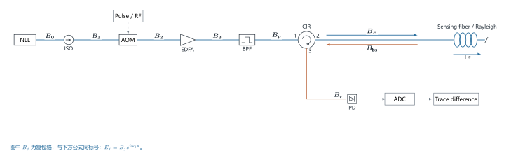

01强度直检 φ-OTDR / DVS
- 工作方式脉冲回波直接进入光电接收器，比较各位置的散斑强度变化。Directly detect pulse returns and compare local speckle-intensity changes.
- 直接观测瑞利散斑强度变化Rayleigh speckle intensity changes
- 适用条件与局限强度与相位一般是非线性关系，可定位振动，不能仅凭强度差直接换算定量应变。Intensity is generally nonlinear in phase: vibration localization alone does not yield quantitative strain.
代表性光路与完整公式

发射链与瑞利回波（图中逐段标号）
\begin{aligned}
B_0&=A_0e^{i\phi_L(T+u)},\quad E_j=B_je^{i\omega_0u},\\
B_1&=t_I B_0,\qquad B_2=p(u)e^{i\Omega_Au}B_1,\\
B_3&=\sqrt G B_2,\qquad B_p=h_B*B_3,\\
B_F&=t_{12}B_p,\quad B_{\rm bs}=\Hh[B_F],\\
B_r&=t_{23}B_{\rm bs}=t_{23}\sum_j r_j B_F(u-\tau_j)e^{i\delta\Phi_j(T)}.
\end{aligned}
这里 \tau_j=2z_j/v_g；p 是场门函数；G 为功率增益。h_B 为滤波器的复基带冲激响应，* 表示卷积。
光电流与可观测量
令 q_j=r_jB_F(u-\tau_j)e^{i\delta\Phi_j}，则
\begin{aligned}
i&=\R|B_r|^2\\
&=\R|t_{23}|^2\left[\sum_j|q_j|^2+2\sum_{j<k}\Re(q_jq_k^*)\right],\\
D(u,T)&=i(u,T)-i(u,T_0),\qquad z=\frac{v_gu}{2}.
\end{aligned}
解释与适用边界
交叉项含 \cos[\delta\Phi_j-\delta\Phi_k+\text{静态相位}]。强度差可定位振动，但对相位一般是非线性的；单独测量强度不能直接套用线性的相位--应变公式。
\Delta z\simeq\frac{v_g\tau_p}{2},\qquad f_{\rm rep}\lesssim\frac{v_g}{2L}.
这里 \tau_p 是脉宽，L 为感测长度；u 已扣除固定系统延迟。